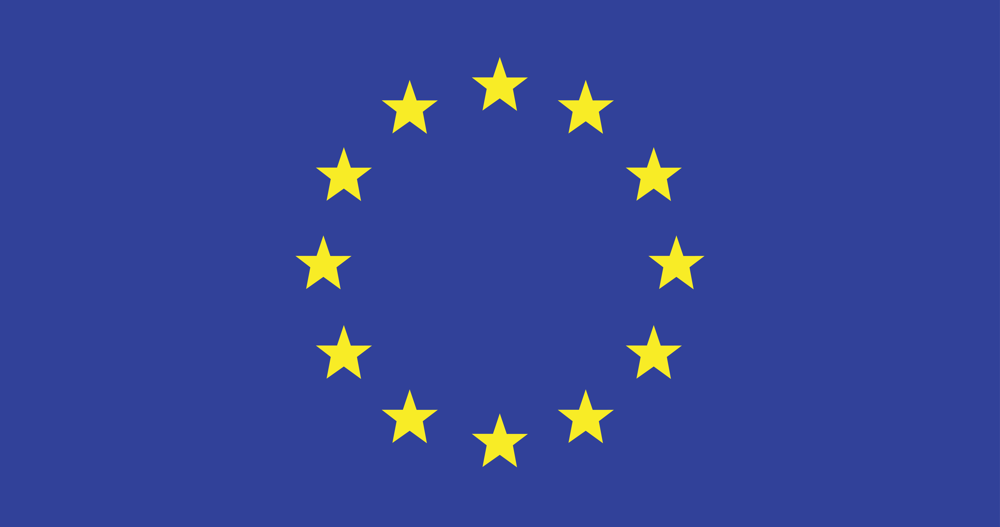

Europa
Europa este una dintre cele mai vizitate regiuni din lume, datorită istoriei și culturii sale.
Călătoria reprezintă procesul prin care oamenii se deplasează dintr-un loc în altul pentru a descoperi locuri noi, culturi diferite sau pentru a-și îndeplini anumite scopuri. În prezent, călătoria a devenit o parte importantă a vieții moderne, fiind facilitată de mijloacele de transport rapide și de dezvoltarea tehnologiei. Călătoriile pot avea mai multe scopuri: turismul, studiile, munca sau vizitarea persoanelor dragi. Ele oferă oamenilor posibilitatea de a cunoaște lumea, de a învăța lucruri noi și de a experimenta tradiții și obiceiuri diferite. De asemenea, călătoriile contribuie la dezvoltarea personală, deoarece ajută la formarea unor noi perspective asupra vieții. Impactul călătoriilor este vizibil la nivel mondial, deoarece acestea facilitează comunicarea și relațiile dintre oameni din diferite țări. Turismul, transportul și schimburile culturale sunt doar câteva domenii care sunt puternic influențate de mobilitatea oamenilor.
Sunt realizate pentru relaxare și vacanță. Oamenii călătoresc pentru a descoperi locuri noi, pentru a se odihni și pentru a se bucura de experiențe plăcute.
Au ca scop educația și dezvoltarea personală. Elevii și studenții pot participa la schimburi de experiență sau pot studia în alte orașe ori țări.
Sunt legate de activitatea profesională. Acestea includ întâlniri, conferințe sau delegații și sunt, de obicei, organizate pe perioade scurte.
Sunt destinate celor care caută adrenalină și experiențe intense. Pot include drumeții, explorări sau activități în natură.
Aceste călătorii au un scop emoțional. Oamenii călătoresc pentru a petrece timp cu familia, prietenii sau persoana iubită.
Transportul rutier este unul dintre cele mai utilizate. Include deplasarea cu mașina, autobuzul sau motocicleta. Este flexibil și accesibil, fiind potrivit atât pentru distanțe scurte, cât și medii.
Este cel mai rapid mijloc de transport pentru distanțe lungi. Avionul permite călătoria între țări și continente într-un timp redus, fiind preferat pentru deplasările internaționale.
Transportul cu trenul este confortabil și eficient. Este des întâlnit în Europa și oferă o alternativă mai relaxantă pentru călătoriile pe distanțe medii și lungi.
Include deplasarea pe apă, cu nave sau feriboturi. Este utilizat mai ales pentru transportul între insule sau pentru croaziere turistice.
Acesta include bicicleta, trotineta sau mersul pe jos. Este prietenos cu mediul și ideal pentru distanțe scurte, mai ales în orașe.
Europa este una dintre cele mai vizitate regiuni din lume, datorită istoriei și culturii sale.

Insulele tropicale oferă plaje spectaculoase și o atmosferă relaxantă.

Munții oferă peisaje impresionante și sunt ideali pentru aventură.

Marile orașe oferă tehnologie, viață urbană și oportunități diverse.